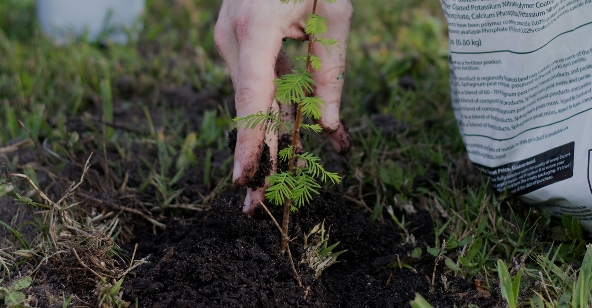
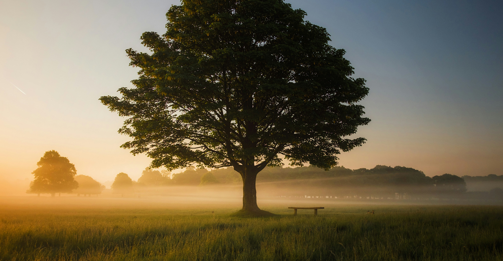
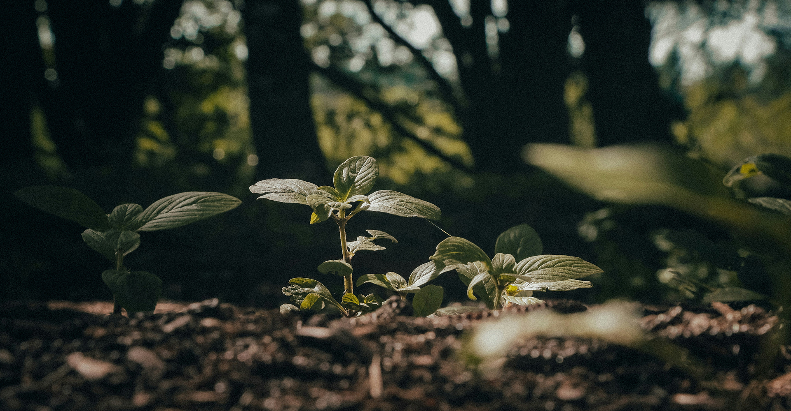
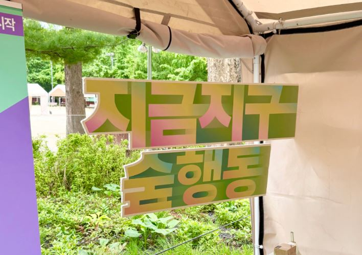
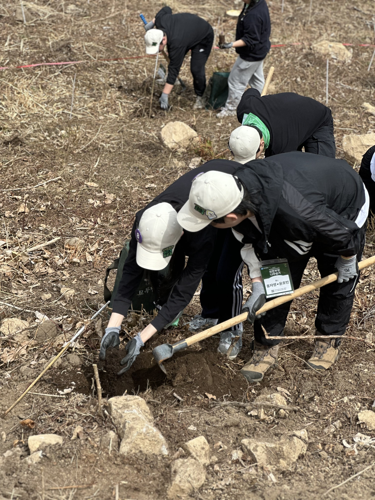
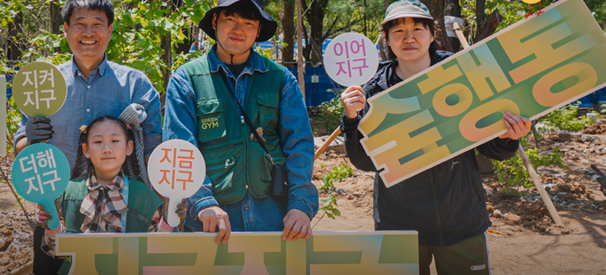
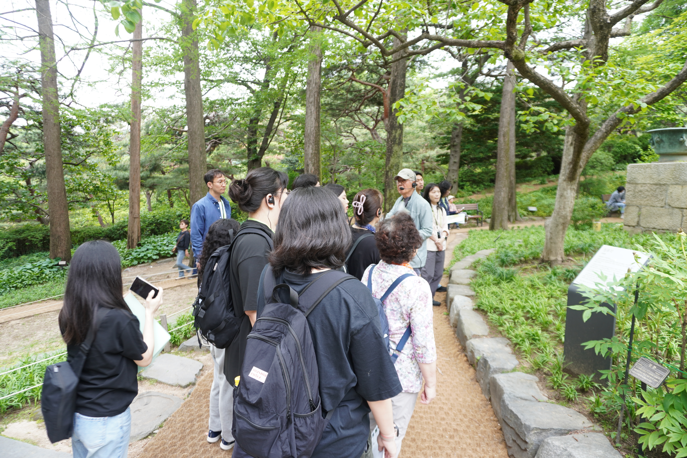

2024년 한 해 동안 나무의숲에서 전국 방방곡곡 심은
나무의 수는 총 102,302그루 입니다.
5월 22일 아침, 2025 서울국제정원박람회의 개막을 앞두고 박람회장은 마지막 손길로 분주했습니다. 생명의숲 부스도 올해 캠페인 슬로건인 “2025 지금지구 숲행동” 보드를 걸며 준비를 마쳤습니다.
2025.06.17 정성엽
매년 열리는 신혼부부 나무심기 행사, 2025년에도 생명의숲은 유한킴벌리와 함께 신혼부부 나무심기 행사를 진행하였습니다. 비 예보가 있었던 행사 당일, 하지만 날씨요정도 우리 모두의 바람을 알아차렸는 지, 맑은 날씨로 따뜻하게 맞이해주었습니다.
2025.06.09 정하나
서로배움학교는 생명의숲 활동가의 역량 강화를 위한 스터디 그룹 프로그램입니다.
2025.06.05 생명의숲
올해, 새로운 기획 활동으로 시민들과 함께하는 숲 탐방 프로그램을 준비했다. 서울 시내에서 시민들이 쉽게 접근할 수 있는 숲들을 검토한 끝에, 최종 목적지는 청와대로 정했다. 이유는 명확했다. 『청와대의 나무들』 저자이자 뛰어난 해설가인 박상진 교수님이 계시고, 조만간 개방된 청와대가 다시 일반에 폐쇄될 수도 있다는 소식 때문이었다.
2025.05.30 유영민